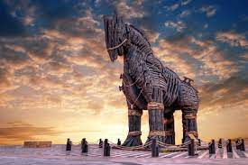

Guerra de Tróia
Essa guerra durou 10 anos e aconteceu após uma visita dos príncipes de Troia a Esparta: Heitor e Paris. Este último se apaixonou por Helena e a raptou, o que levou Menelau, marido de Helena, a pedir que seu irmão e líder, Agamenon, declarasse guerra a Troia após se sentir traído. O principal guerreiro da guerra foi Aquiles, que só foi para a batalha após ser convencido por Odisseu, um respeitado guerreiro grego.No décimo ano das batalhas, os gregos estavam em vantagem até Aquiles se desentender com Agamenon sobre o sequestro de uma sacerdotisa do templo de Apolo. Sem o apoio de Aquiles, os troianos tiveram importantes vitórias até Pátroclo, primo de Aquiles, vestir as armaduras de seu primo e ser morto em combate por Heitor. Aquiles volta à guerra para vingar seu primo e mata Heitor em um duelo.

Odisseu teve a ideia de atravessar as muralhas de Troia construindo um gigante cavalo de madeira e escondendo seus melhores soldados dentro dele. Eles esconderam suas navegações para parecer que partiram em retirada e ofereceram o cavalo como presente de paz aos troianos. Com o cavalo dentro das muralhas, os gregos atacaram a cidade a partir de dentro, enquanto Aquiles era atingido por uma flecha atirada por Paris em seu calcanhar, o que levou a sua morte. Assim, os gregos venceram a Guerra de Troia.